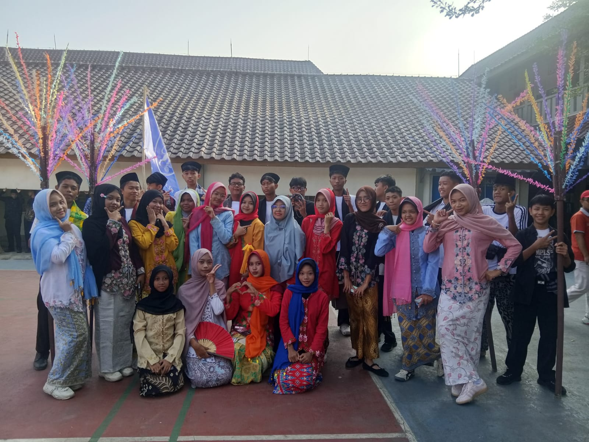

1998
Jalan Kreasi 17 Agustus Kelas 11
Momen yang tak terlupakan selama perjalanan kelas XI RPL 1.

XI RPL 1 • SMK Negeri 1 Purbalingga
Galeri Kenangan
Kumpulan momen dan kenangan indah selama perjalanan kelas XI RPL 1.

Momen yang tak terlupakan selama perjalanan kelas XI RPL 1.


Namun cerita, persahabatan, tawa, dan semua kenangan yang kita buat bersama akan selalu menjadi bagian dari perjalanan hidup kita.